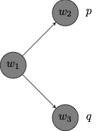

9 Possible Worlds Semantics
The semantics for propositional modal logic uses possible worlds models to interpret the language in order to provide fruitful definitions of validity and logical consequence.
Models
Definition 9.1 (Possible Worlds Model) A possible worlds model \(M\) for \(\mathcal{L}^\Box\) is a structure \((W, R, V)\) where:
\(W\) is a non-empty set of worlds
\(R\) is a binary accessibility relation on \(W\)
\(V\) maps each propositional variable \(p\) to a set of possible worlds \(V(p)\).
Given \(Ruv\), we write that \(v\) is accessible from \(u\) or that \(u\) sees \(v\). The accessibility relation represents a relation of relative possibility: \(v\) is accessible from \(u\) corresponds to the claim that \(v\) is possible relative to \(u\).
The role of \(V\) is to assign to each propositional variable \(p\) the set of worlds \(w\) at which \(p\) is true. So, when \(w \in V(p)\), we will write that \(p\) is true at \(w\).
We will use graphs to represent possible worlds models.
Example 9.1 We use a directed graph in order to depict a possible worlds model of the form \((W, R, V)\) where:
\(W = \{w_1, w_2, w_3, w_4\}\)
\(R = \{(w_1, w_2), (w_2, w_3), (w_3, w_4), (w_1, w_4), (w_1, w_3), (w_2, w_2)\}\)
\(V(p) = \{w_3, w_4\}\); \(V(q) = \{w_2, w_4\}\)

Each node corresponds to a possible world in the model. The accessibility relation obtains between one world and another when there is an arrow that points from the first to the second. Finally, the graph records the propositional variables that are true at each world according to \(V\).
Notice that we do not have the means yet to ask whether a complex formula \(\varphi\) is true at a world in a model. To that purpose, we provide a recursive definition of a semantic relation between a world \(w\) in a model \(M\) and a formula \(\varphi\).
Definition 9.2 (Truth at a World in a Model) We define what is for a formula \(\varphi\) to be true at a world \(w\) in a possible worlds model \(M\), which we write: \(M, w \Vdash \varphi\): \[ \begin{array}{lll} M, w \Vdash p & \text{iff} & w \in V(p)\\ M, w \Vdash \neg \varphi & \text{iff} & M, w \nVdash \varphi\\ M, w \Vdash (\varphi \to \psi) & \text{iff} & M, w \nVdash \varphi \ \text{or} \ M, w \Vdash \psi\\ M, w \Vdash \Box \varphi & \text{iff} & \text{for every} \ u \in W \ \text{such that} \ Rwu, \ M, u \Vdash \varphi\\ \end{array} \] Given the usual defintion of \(\Diamond\) in terms of \(\Box\), we find that \[ \begin{array}{lll} M, w \Vdash \Diamond \varphi & \text{iff} & \text{for some} \ u \in W \ \text{such that} \ Rwu, \ M, u \Vdash \varphi\\ \end{array} \]
Let us return to the preceding example to explain how to compute the truth value of a formula at a world in a model.
Example 9.2 Consider the possible worlds model depicted by the graph:
Here is how to evaluate complex modal formulas at a world in the model:
- \(p \to (p \to q)\)
This formula is true at worlds \(w_1\), \(w_2\) \(w_3\) but not at \(w_4\).
- \(M, w_4 \nVdash p \to (p \to q)\) because \(M, w_4 \Vdash p\), yet \(M, w_4 \nVdash p \to q\). That is, \(p\) is true at \(w_4\) but \(p\to q\) is not true at \(w_4\).
- \(\Box p\)
This formula is true exactly at worlds \(w_3\) and \(w_4\).
\(M, w_1 \nVdash \Box p\) because \(Rw_1w_2\) and \(M, w_2 \Vdash p\). That is, \(\Box p\) is not true at \(w_1\) because \(p\) is not true at \(w_2\), which is world accessible from \(w_1\).
\(M, w_3 \Vdash \Box p\) because for every \(u \in W\), if \(Rw_3 u\), then \(M, u \Vdash p\). That is \(p\) is true at all worlds that are accessible from \(w_3\), namely, \(w_4\).
\(M, w_4 \Vdash \Box p\) because for every \(u \in W\), if \(Rw_4 u\), then \(M, u \Vdash p\). That is \(p\) is true at all worlds that are accessible from \(w_4\) which in this case are none.
- \(\Diamond \Box p\)
This formula is true exactly at worlds \(w_1\), \(w_2\) and \(w_3\) but not at \(w_4\).
\(M, w_1 \Vdash \Diamond \Box p\) because \(Rw_1w_3\) and \(M, w_3 \Vdash \Box p\). That is, \(\Box p\) is true at some world that is accessible from \(w_1\), namely, \(w_3\).
\(M, w_4 \Vdash \Diamond \Box p\) because there is no \(u\in W\) such that \(Rw_4u\) and \(M, u \Vdash \Box p\). That is, since no world is accessible from \(w_4\), \(\Box p\) is not true at a world that is accessible from \(w_4\).
- \(\Box (q \to p)\)
This formula is true exactly at worlds \(w_3\) and \(w_4\).
\(M, w_1 \nVdash \Box (q \to p)\) because \(Rw_1w_2\) and \(M, w_2 \nVdash q \to p\). That is, \(q \to p\) is not true at every world that is accessible from \(w_1\), e.g., it is not true at \(w_3\).
\(M, w_3 \Vdash \Box (q \to p)\) because for every \(u \in W\), if \(Rw_3 u\), then \(M, u \Vdash q \to p\). That is \(q \to p\) is true at all worlds that are accessible from \(w_3\), namely, \(w_4\).
\(M, w_4 \Vdash \Box (q \to p)\) because for every \(u \in W\), if \(Rw_4 u\), then \(M, u \Vdash q \to p\). That is \(q \to p\) is true at all worlds that are accessible from \(w_4\) which in this case are none.
We now define what is for a formula to be true in a model:
Definition 9.3 (Truth in a Model) A formula \(\varphi\) to be true in a possible worlds model \(M\), which we write \(M \Vdash \varphi\) if, and only if, for all \(w\in W\), \(M, w \Vdash \varphi\).
Example 9.3 Consider the possible worlds model depicted by the graph:
Here is how to evaluate complex modal formulas in the model:
- \(\neg p \to \Diamond p\)
This formula is true in the model because it is true at all possible worlds in the model.
\(\neg p \to \Diamond p\) is true at \(w_3\) and \(w_4\) because \(\neg p\) is not true at either world.
\(\neg p \to \Diamond p\) is true at \(w_1\) and \(w_2\) because \(\Diamond p\) is true at both worlds: \(\Diamond p\) is true at \(w_1\) because \(Rw_1w_3\) and \(p\) is true at \(w_3\), and \(\Diamond p\) is true at \(w_2\) because \(Rw_2w_3\) and \(p\) is true at \(w_3\).
- \(p \to \Box q\)
This formula is true in the model because it is true at all possible worlds in the model.
\(p \to \Box q\) is true at \(w_1\) and \(w_2\) because \(p\) is not true at either world.
\(p \to \Box q\) is true at \(w_3\) and \(w_4\) because \(\Box q\) is true at both worlds: \(\Box q\) is true at \(w_3\) because \(q\) is true at all worlds accessible from \(w_3\), namely, \(w_4\); \(\Box q\) is true at \(w_4\) because \(q\) is true at all worlds accessible from \(w_4\), namely, none.
Frames
There are two ingredients to a possible worlds models, there is the ordered pair of a set of worlds \(W\) and an accessibility relation \(R\) on \(W\), and there is an assignment based on that model. We will use the term ‘frame’ to refer to the first ingredient.
Definition 9.4 (Frame) A frame \(F\) for \(\mathcal{L}^\Box\) is a structure \((W, R)\) where:
\(W\) is a non-empty set of worlds
\(R\) is a binary accessibility relation on \(W\)
A model \(M\) is based on a frame \(F = (W, R)\) if, and only if, there is an assignment \(V\) such that \(M = (F, V)\). That is, \(M = (W, R, V)\).
For a formula \(\varphi\) of \(\mathcal{L}^\Box\) to be valid in a frame is to be true in every model based on that frame, that is, to be true at every world of every model based on that frame.
Definition 9.5 (Validity in a Frame) A formula \(\varphi\) is valid in a frame \((W, R)\), written \((W, R) \models \varphi\), if, and only if, \(\varphi\) is true in every model \((W, R, V)\) based on the frame \((W, R)\).
Example 9.4 Here are two formulas of \(\mathcal{L}^\Box\) that are valid in every frame:
\(\Diamond (p \vee q) \leftrightarrow (\Diamond p \vee \Diamond q)\)
\(\Box (p \wedge q) \leftrightarrow (\Box p \wedge \Box q)\)
More generally, \(\Diamond\) distributes over disjunction and \(\Box\) distributes over conjunction. Both biconditionals are true at every world of every possible worlds model, which means that they are true in every model based on every frame.
Here are two formulas of \(\mathcal{L}^\Box\) that are not valid in every frame:
\(\Diamond (p \wedge q) \leftrightarrow (\Diamond p \wedge \Diamond q)\)
\(\Box (p \vee q) \leftrightarrow (\Box p \vee \Box q)\)
For a counterexample to the validity distributivity of \(\Diamond\) over conjunction in every frame, consider the model below:

Notice that \(\Diamond p \wedge \Diamond q\) is true at \(w_1\) because each conjunct is true at \(w_1\):
\(\Diamond p\) is true at \(w_1\) because \(p\) is true at \(w_2\), which is accessible from \(w_1\)
\(\Diamond q\) is true at \(w_1\) because \(q\) is true at \(w_3\), which is accessible from \(w_1\)
Yet, \(\Diamond (p \wedge q)\) is false at \(w1\) because \(p \wedge q\) is not true at any world accessible from \(w_1\).
Notice that the model doubles as a counterexample to distributivity of \(\Box\) over \(\vee\) in every frame:
The formula \(\Box (p \vee q)\) is true at \(w_1\) because \(p \vee q\) is true at every world accessible from \(w_1\):
\(p \vee q\) is true at \(w_2\) because \(p\) is true at \(w_2\).
\(p \vee q\) is true at \(w_3\) because \(q\) is true at \(w_3\).
However, \(\Box p \vee \Box q\) is not true at \(w_1\) because neither \(\Box p\) nor \(\Box q\) is true at \(w_1\).
\(\Box p\) is not true at \(w_1\) because \(p\) is not true at \(w_3\), which is accessible from \(w_1\).
\(\Box q\) is not true at \(w_1\) because \(q\) is not true at \(w_2\), which is accessible from \(w_1\).
We will often restrict attention to a class of frames and ask which formulas are valid in all and only those frames in the class.
Definition 9.6 (Validity in a Class of Frames) A formula \(\varphi\) is valid in a class of frames \(\mathcal{C}\), written \(\models_{\mathcal{C}} \varphi\) if, and only if, \(\varphi\) is valid in every frame \((W, R)\) in the class \(\mathcal{C}\).
Proposition 9.1 Each formula listed below is valid in a frame if the accessibility relation satisfies the relevant condition.
| Formula | Condition on \(R\) | |
|---|---|---|
| \(T\) | \(\Box p \to p\) | reflexive on \(W\) |
| \(B\) | \(p \to \Box \Diamond p\) | symmetric on \(W\) |
| \(4\) | \(\Box p \to \Box \Box p\) | transitive on \(W\) |
| \(5\) | \(\Diamond p \to \Box \Diamond p\) | euclidean on \(W\) |
Proof. We look at each case in turn:
- \(T\) is valid in all reflexive frames.
- Let \((W, R, V)\) be a model based on a reflexive frame \((W, R)\). Given \(w \in W\), suppose \((W, R, V), w \Vdash \Box p\), which means that for all \(u\in W\), if \(Rwu\), then \(u \in V(p)\). Since \(R\) is reflexive, \(Rww\) and \(w \in V(p)\). So, \((W, R, V), w \Vdash \Box p\) and \((W, R, V), w \Vdash \Box p \to p\). Generalizing, we conclude \((W, R, V) \Vdash \Box p\).
- \(B\) is valid in all symmetric frames.
- Let \((W, R, V)\) be a model based on a symmetric frame \((W, R)\). Given \(w \in W\), suppose \((W, R, V), w \Vdash p\), which means that \(w \in V(p)\). Let \(u\in W\) be such that \(Rwu\). Since \(R\) is symmetric on \(W\), \(Rwu\), which means that \((W, R, V), u \Vdash \Diamond p\). Generalizing, for every \(u\in W\), if \(Rwu\), \((W, R, V), u \Vdash \Diamond p\). We conclude that \((W, R, V), w \Vdash \Box \Diamond p\) and \((W, R, V), w \Vdash p \to \Box \Diamond p\). Generalizing again, we find \((W, R, V) \Vdash p \to \Box \Diamond p\).
- \(4\) is valid in all transitive frames.
- Let \((W, R, V)\) be a model based on a transitive frame \((W, R)\). Given \(w \in W\), suppose \((W, R, V), w \Vdash \Box p\), which means that for all \(u\in W\), if \(Rwu\), then \(u \in V(p)\). Let \(u\in W\) be such that \(Rwu\). We want to verify that \((W, R, V), u \Vdash \Box p\). For let \(t\in W\) be such that \(Rut\). Since \(R\) is transitive on \(W\), \(Rwt\), which means that \(t\in V(p)\) and \((W, R, V), t \Vdash p\). Generalizing, for every \(t\in W\), if \(Rut\), \((W, R, V), t \Vdash p\). We conclude that \((W, R, V), u \Vdash \Box p\) and \((W, R, V), w \Vdash \Box \Box p\). So, \((W, R, V), w \Vdash \Box p \to \Box \Box p\). Generalizing again, we infer \((W, R, V) \Vdash \Box p \to \Box \Box p\).
- \(5\) is valid in euclidean frames.
- Let \((W, R, V)\) be a model based on a euclidean frame \((W, R)\). Given \(w \in W\), suppose \((W, R, V), w \Vdash \Diamond p\), which means that for some \(u\in W\) such that \(Rwu\), we have \(u \in V(p)\). Let \(t \in W\) be such that \(Rwt\). Since \(R\) is euclidean, \(Rtu\), which means that \((W, R, V), t \Vdash \Diamond p\). Generalizing, we find that for every \(t\in W\), if \(Rut\), \((W, R, V), t \Vdash \Diamond p\). So, \((W, R, V), w \Vdash \Box \Diamond p\). So, \((W, R, V), w \Vdash \Diamond p \to \Box \Diamond p\). Generalizing again, we infer \((W, R, V) \Vdash \Diamond p \to \Box \Diamond p\).
Frame Correspondence
The success of the possible worlds semantics for propositional modal logic is connected to the fact that it sheds new light on modal principles via systematic correspondences between the validity of those principles and certain structural features of the modal accesssibility relation \(R\) on a set of worlds \(W\) in a frame \((W, R)\).
Proposition 9.2 Each formula listed below is valid in a frame only if the accessibility relation satisfies the relevant condition.
| Formula | Condition on \(R\) | |
|---|---|---|
| \(T\) | \(\Box p \to p\) | reflexive on \(W\) |
| \(B\) | \(p \to \Box \Diamond p\) | symmetric on \(W\) |
| \(4\) | \(\Box p \to \Box \Box p\) | transitive on \(W\) |
| \(5\) | \(\Diamond p \to \Box \Diamond p\) | euclidean on \(W\) |
Proof. We provide two styles of argument for each case. One targets the contrapositive of each claim, while the other consists of a direct proof of the conditional.
- \(T\) is only valid in reflexive frames.
If \(R\) is not reflexive on \(W\) in a frame \((W,R)\), then there is an assignment \(V\) and a world \(w\in W\) such that \((W, R, V) \nVdash \Box p \to p\).
Suppose \(R\) is not reflexive on \(W\) in a frame \((W,R)\). That means that there is a world \(w \in R\) such that \(\neg Rww\). Define \(V\) to let \(V(p) = W \setminus \{w\}\). On the one hand, \((W, R, V), w \Vdash \Box p\) because \(p\) is true at any world accessible from \(w\). On the other hand, \((W, R, V), w \nVdash p\) because \(w \notin V(p)\). So, \((W, R, V), w \nVdash \Box p \to p\)
If \((W, R) \models \Box p \to p\), then \(R\) is reflexive on \(W\).
Suppose \((W, R) \models \Box p \to p\). Fix \(w \in W\) and consider the assignment \(V(p) = \{u\in W: Rwu\}\). It follows that \((W, R, V), w \Vdash \Box p\). Since \((W, R, V), w \Vdash \Box p \to p\), we infer \(w \in V(p)\), which means that \(Rww\).
- \(B\) is only valid in symmetric frames.
If \(R\) is not symmetric on \(W\) in a frame \((W,R)\), then there is an assignment \(V\) and a world \(w\in W\) such that \((W, R, V) \nVdash p \to \Box \Diamond p\).
Suppose \(R\) is not symmetric on \(W\) in a frame \((W,R)\). That means that there are two worlds \(w, u \in R\) such that \(Rwu\) and \(\neg Ruw\). Define \(V\) to let \(V(p) = \{w\}\). On the one hand, \((W, R, V), w \Vdash p\) because \(w \in V(p)\). On the other hand, \((W, R, V), w \nVdash \Box \Diamond p\) because \(Rwu\) and \((W, R, V), u \nVdash \Diamond p\). The reason for this is that \(\neg Ruw\) and \(w\) is the only world at which \(p\) is true in the model.
If \((W, R) \models p \to \Box \Diamond p\), then \(R\) is symmetric on \(W\).
Suppose \((W, R) \models p \to \Box \Diamond p\). Fix \(w, u \in W\) and consider the assignment \(V(p) = \{w\}\). It follows that \((W, R, V), w \Vdash p\). Since \((W, R, V), w \Vdash \Box \Diamond p\) and \(Rwu\), we infer that \((W, R, V), u \Vdash \Diamond p\), which means that \(Ruw\) as \(V(p)= \{w\}\). Generalizing, we conclude that \(R\) is symmetric on \(W\).
- \(4\) is only valid in transitive frames.
If \(R\) is not transitive on \(W\) in a frame \((W,R)\), then there is an assignment \(V\) and a world \(w\in W\) such that \((W, R, V) \nVdash \Box p \to \Box \Box p\).
Suppose \(R\) is not transitive on \(W\) in a frame \((W,R)\). That means that there are three worlds \(w, u, t \in R\) such that \(Rwu\) and \(Rut\) but \(\neg Rwt\). Define \(V\) to let \(V(p) = \{v\in W: Rwv\}\). On the one hand, \((W, R, V), w \Vdash \Box p\) because \(v\in V(p)\) for every \(v\in W\) such that \(Rwv\). On the other hand, \((W, R, V), w \nVdash \Box \Box p\) because \(Rwu\) and \((W, R, V), u \nVdash \Box p\). The reason for this is that \(Rut\) and \(t\notin V(p)\) since \(\neg Rwt\).
If \((W, R) \models \Box p \to \Box \Box p\), then \(R\) is transitive on \(W\).
Suppose \((W, R) \models \Box p \to \Box \Box p\). Fix \(w, u, t \in W\) and assume \(Rwu\) and \(Rut\). Consider an assignment \(V\) on which \(V(p) = \{v: Rwv \}\). If \((W, R, V), w \Vdash \Box p\), then since \(Rwu\) and \((W, R), w \vDash \Box p \to \Box \Box p\), \((W, R, V), w \Vdash \Box \Box p\) and \((W, R), u \vDash \Box p\). So, since \(Rut\), \((W, R), t \vDash p\). That means that \(u\in V(p)\) and, by definition of \(V\), \(Rwt\).
- \(5\) is only valid in euclidean frames.
If \(R\) is not euclidean on \(W\) in a frame \((W,R)\), then there is an assignment \(V\) and a world \(w\in W\) such that \((W, R, V) \nVdash \Diamond p \to \Box \Diamond p\).
Suppose \(R\) is not euclidean on \(W\) in a frame \((W,R)\). That means that there are three worlds \(w, u, t \in R\) such that \(Rwu\) and \(Rwt\) but \(\neg Rut\). Define \(V\) to let \(V(p) = \{t\}\). On the one hand, \((W, R, V), w \Vdash \Diamond p\) because \(t\in V(p)\) and \(Rwt\). On the other hand, \((W, R, V), w \nVdash \Box \Diamond p\) because \(Rwu\) and \((W, R, V), t \nVdash \Diamond p\), since \(\neg Rut\).
If \((W, R) \models \Box p \to \Box \Box p\), then \(R\) is euclidean on \(W\).
Suppose \((W, R) \models \Diamond p \to \Box \Diamond p\). Fix \(w, u \in W\) and consider the assignment \(V(p) = \{u\}\). It follows that \((W, R, V), w \Vdash \Diamond p\). Since \((W, R, V), w \Vdash \Box \Diamond p\) and \(Rwu\), we infer that \((W, R, V), u \Vdash \Diamond p\), which means that \(Ruw\) as \(V(p)= \{w\}\). Generalizing, we conclude that \(R\) is euclidean on \(W\).
Frame Definability
Let us make precise the the observation that each of the formulas discussed characterizes a class of frames.
Definition 9.7 (Modal Definability) A formula \(\varphi\) of \(\mathcal{L}^\Box\) modally defines a class of frames \(\mathcal{C}\) if, and only if, for all frames \((W, R)\),
\[ \begin{array}{lll} (W, R) \models \varphi & \text{iff} & (W, R) \in \mathcal{C} \end{array} \]
Each of the formulas discussed above defines the class of frames in which the accessibility relation satisfies the relevant formal condition. That is,
\(T\) modally defines the class of reflexive frames
\(B\) modally defines the class of symmetric frames
\(4\) modally defines the class of transitive frames
\(5\) modally defines the class of euclidean frames
The expressive power of propositional modal logic is measured by the ability to make distinctions. The language affords us the means to distinguish reflexive from non-reflexive frames in terms of the validity of the formula \(\Box p \to p\). Likewise, we have the means to make distinctions between symmetric and non-symmetric frames or between transitive and non-transitive frames.
First-order languages are able to make similar distinctions. Given a first-order language with a binary relational predicate \(R\) as a non-logical predicate, we are in a position to specify first-order formulas that characterize different classes of frames:
| Frames | Modal Definability | First-Order Definability |
|---|---|---|
| Reflexive | \(\Box p \to p\) | \(\forall x \ Rxx\) |
| Symmetric | \(p \to \Box \Diamond p\) | \(\forall x \forall y (Rxy \to Ryx)\) |
| Transitivity | \(\Box p \to \Box \Box p\) | \(\forall x \forall y \forall z (Rxy \wedge Ryz \to Rxz)\) |
| Euclidean | \(\Diamond p \to \Box \Diamond p\) | \(\forall x \forall y \forall z (Rxy \wedge Rxz \to Ryz)\) |
One may now compare the expressive power of modal and first-order logic. Even if the class of reflexive, symmetric, and transitive frames are each modal and first-order definable, one may wonder whether every class of formulas defined by a first-order formula is modally definable and, vice versa, whether every modally definable frame is first-order definable.
The answer to both questions is ‘no’. Some formulas of \(\mathcal{L}^\Box\) are able to modally define classes of frames that are not first-order definable, and some classes of frames that are first-order definable are not modally definable by a formula of \(\mathcal{L}^\Box\).
| Frames | Modal Definability | First-Order Definability |
|---|---|---|
| Irreflexive | No | \(\forall x \ \neg Rxx\) |
| Universal | No | \(\forall x \forall y Rxy\) |
| Transitive Converse Well-Founded | \(\Box (\Box p \to p) \to \Box p\) | No |
| Identity | Yes | \(\forall x \forall y (Rxy \leftrightarrow x = y)\) |
| Functional | Yes | \(\forall x \forall y (Rxy \wedge Rxz \to x =y)\) |
| Serial | Yes | \(\forall x \exists y Rxy\) |
Definition 9.8 A binary relation \(R\) on a set \(W\) converse well-founded iff there are no infinite ascending \(R\)-chains of the form \(x_1Rx_2 \cdots x_nRx_{n+1} \cdots\).
Proposition 9.3 The class of transitive converse well-founded frames is not first-order definable.
This is a consequence of the Compactness Theorem for first-order logic: if a set of first-order formulas \(\Gamma\) is finitely satisfiable, then \(\Gamma\) is finitely satisfiable.
Proof. For each natural number \(n > 0\), let \(\varphi_n\) be a formula according to which there is a finite \(R\)-chain with at least \(n+1\) nodes:
\[ \varphi_n := \exists x_1 \dots \exists x_n \ (Rx_1x_2 \wedge \dots \wedge Rx_n x_{n+1}) \] For every first-order formula \(\psi\), if \(\psi\) is true of every converse-well-founded frame, then if \(\Sigma\) is a set of formulas that requires \(R\) to form a linear order, that is, be irreflexive, transitive, and connected, then \[ \Sigma \cup \{\varphi_n: n > 0\}, \psi \] is finitely satisfiable. If \(\Delta\) is a finite subset of that set, then there is a largest \(n\) for which \(\varphi_n \in \Delta\), and a frame \((W, R)\) in which \(R\) is a linear order of exactly \(n\) worlds will satisfy \(\Delta\). By Compactness, \(\Sigma \cup \{\varphi_n: n > 0\}, \psi\) is satisfiable, which requires a frame \((W, R)\) in which \(R\) is a linear order of an infinity of worlds in \(W\). So, \(\psi\) is satisfiable in a non-converse-well-founded frame. So, if \(\psi\) is true of every converse well-founded frame, then it is true of some non-converse-well-founded frames.
Proposition 9.4 \(\Box (\Box p \to p) \to \Box p\) modally defines the class of converse well-founded frames.
Proof. We want to prove that for all frames \((W, R)\),
\[ \begin{array}{lll} (W, R) \models \Box (\Box p \to p) \to \Box p & \text{iff} & R \ \text{transitive and converse well-founded on} \ W \end{array} \] (\(\Rightarrow\)) Suppose \(R\) is not transitive. Then there are worlds \(w, u, v\in W\) such that \(wRu\) and \(uRv\) but not \(wRv\). In that case, let \(V(p) = W \setminus \{u, v\}\) and note that \((W, R, V), w \nVdash \Box p\) and \((W, R, V), u \nVdash \Box p\). Furthermore, \((W, R, V), u \nVdash \Box p \to p\). However, by definition of \(V\), if \(Rwt\), then either \(t =u\) or \(t \in V(p)\). Either way, \((W, R, V), t \Vdash p\) and \((W, R, V), t \Vdash \Box p \to p\). So, \((W, R, V), w \Vdash \Box (\Box p \to p)\). So, \((W, R, V), w \nVdash \Box (\Box p \to p) \to \Box p\).
Now, suppose \(R\) is not converse well-founded. Then there is an infinite \(R\)-chain \(u_1 Ru_2 \dots u_nRu_{n+1} \dots\). In that case, we efine \(V(p)\) to exclude every member of the \(R\)-chain, that is, \(V(p) = W \setminus \{u_1, u_2, \dots\}\). Given some \(w \in X\), we argue that \((W, R, V), w \Vdash \Box (\Box p \to p)\) even though \((W, R, V), w \nVdash \Box p\). For the former, note that \((W, R, V), u_n \nVdash \Box p\) for each member \(u_n\) of the infinite \(R\)-chain. So, \((W, R, V), u_n \Vdash \Box p \to p\) and \((W, R, V), u_n \Vdash \Box (\Box p \to p)\) for every member \(u_n\) of the infinite \(R\)-chain. So, \((W, R, V), u_n \nVdash \Box (\Box p \to p) \to \Box p\) for every member \(u_n\) of the infinite \(R\)-chain.
(\(\Leftarrow\)) Suppose \(R\) is transitive and converse well-founded. Furthermore, let \((W, R, V)\) be a model based on \((W, R)\) and let \(w \in W\). We now argue that \((W, R, V), w \Vdash \Box (\Box p \to p)\to \Box p\). For suppose \((W, R, V), w \nVdash \Box p\) and consider the set \(X=\{u \in W: wRu \wedge u\notin V(p) \}\). We know that this set is non-empty since \((W, R, V), w \nVdash \Box p\). Since \(R\) is converse well-founded, there is some \(v \in X\) such that \(\neg vRt\) for any \(t\in X\). Otherwise, we would have an infinite \(R\)-chain. Since \(v\in X\), we have that \((W, R, V), v \nVdash p\), despite the fact that if \(vRt\), by transitivity, \(wRt\) and since \(t\notin X\), \((W, R, V), t \Vdash p\). So, \((W, R, V), v \Vdash \Box p\) and \((W, R, V), v \nVdash \Box p \to p\). It follows that \((W, R, V), w \nVdash \Box (\Box p \to p)\).
We will now look at two examples of first-order definable classes of frames that are not modally definable.
Bisimulations
We know that first-order formulas do not discriminate between isomorphic models. The role of isomorphism in first-order logic is played by bisimulation in modal propositional logic, since modal formulas do not discriminate between bisimilar models.
Definition 9.9 (Bisimulation) A bisimulation between two models \((W, R, V)\) and \((W', R', V')\) is a binary relation \(E \subseteq W \times W'\) such that for all \(w\in W\) forall \(w' \in W'\),
if \(wEw'\), then \(w\) and \(w'\) verify exactly the same propositional variables in each model, that is, for all propositional variable \(p\), \(w \in V(p)\) iff \(w' \in V'(p)\).
if \(wEw'\) and \(Rwu\) for some \(u\in W\), then there is some \(u'\in W'\) such that \(Rw'u'\) and \(uEu'\) (the forth condition)
if \(wEw'\) and \(Rw'u'\) for some \(u'\in W'\), then there is some \(u \in W\) such that \(Rwu\) and \(u'Eu\) (the back condition)
If \(E\) is a bisimulation between two models \((W, R, V)\) and \((W', R', V')\), we will call them bisimilar. Furthermore, if \(wEw'\), we will write that the two worlds \(w\) and \(w'\) are bisimilar.
Example 9.5 There is a bisimulation \(E \subseteq W \times W'\) between the models depicted below:
| \((W, R, V)\) | \((W', R', V')\) |
|---|---|
 |
 |
\(E\) relates \(w_1\) to each \(u_1\) and \(v_2\), and vice versa, \(E\) relates each of \(u_1\) and \(v_1\) to \(w_1\).
\(E\) relates \(w_2\) to each \(u_2\) and \(v_2\), and vice versa, \(E\) relates each of \(u_2\) and \(v_2\) to \(w_2\).
One way to think of the situation is that each of \(w_1\) and \(w_2\) have unfolded into two duplicate worlds \(u_1\) and \(v_1\) and \(u_2\) and \(v_2\), respectively. Notice, however, that the two models verify exactly the same formulas of propositional modal logic.
The interest of bisimulations is that the language of propositional modal logic cannot make discriminations between bisimilar models.
Proposition 9.5 (Invariance Lemma) If there is a bisimulation \(E\) between two models \((W, R, V)\) and \((W', R', V')\), then for all \(w\in W\), for all \(w'\in W'\), if \(wEw'\), the for every formula \(\varphi\) of \(\mathcal{L}^\Box\): \[ \begin{array}{lll} (W, R), w \Vdash \varphi & \text{iff} & (W', R'), w' \Vdash \varphi. \end{array} \]
Proof. The proof is by induction over the complexity of formulas.
- Base Case. If \(\varphi\) is a propositional variable \(p\), then if \(wEw'\), by clause 1 in the definition of bisimulation, \(w \in V(p)\) iff \(w' \in V'(p)\), which means
\[ \begin{array}{llll} (W, R, V), w \Vdash p & \text{iff} & w \in V(p) &\\ & & w' \in V'(p) & \text{Clause 1}\\ & & (W', R', V'), w' \Vdash p & \end{array} \] The Boolean cases are immediate:
- Inductive Step for \(\neg\):
\[ \begin{array}{lll} (W, R, V), w \Vdash \neg \varphi & \text{iff} & (W, R, V), w \nVdash \varphi & \\ & & (W', R', V'), w' \nVdash \varphi & IH \\ & & (W', R', V'), w' \Vdash \neg \varphi & \\ \end{array} \] On to the case of \(\to\):
- Inductive Step for \(\to\):
\[ \begin{array}{lll} (W, R, V), w \Vdash \varphi \to \psi & \text{iff} & (W, R, V), w \nVdash \varphi \ \text{or} \ (W, R, V), w \Vdash \psi & \\ & & (W', R', V'), w' \nVdash \varphi \ \text{or} \ (W', R', V'), w' \Vdash \psi & IH \\ & & (W', R', V'), w' \Vdash \varphi \to \psi& \\ \end{array} \] The case for \(\Box\) requires more attention:
- Inductive Step for \(\Box\):
\[ \begin{array}{lll} (W, R), w \Vdash \Box \varphi & \text{iff} & (W, R), u \Vdash \varphi \ \ \text{whenever} \ \ wRu & \\ & & (W', R'), u' \Vdash \varphi \ \ \text{whenever} \ \ w'R'u' & \text{Clauses 2, 3, and} \ IH\\ & & (W', R'), w' \Vdash \Box \varphi& \\ \end{array} \]
Here is a more detailed justification of the step from \((W, R), u \Vdash \varphi\) whenever \(u \in W\) and \(wRu\) to \((W', R'), u' \Vdash \varphi\) whenever \(u' \in W'\):
- Suppose \((W, R, V), u \Vdash \varphi\) whenever \(u \in W\) and \(wRu\). We now argue that if \(wEw'\), then \((W', R', V'), u' \Vdash \varphi\) whenever \(u' \in W'\) and \(w'Ru'\). For if \(w'R'u'\), then, by clause 2 or the back condition, there is some \(u \in W\) such that \(Rwu\) and \(uEu'\). Since \((W, R, V), w \Vdash \Box \varphi\), \((W, R, V), u \Vdash \varphi\), and by the Inductive Hypothesis, \((W', R', V'), u' \Vdash \varphi\) as required. So, we infer \((W', R', V'), w' \Vdash \Box \varphi\).
The converse direction is completely parallel but it makes use of clause 2 or the forth condition instead.
One immediate application of bisimulations is the ability to establish the undefinability of some classes of frames.
Proposition 9.6 Each model of the form \((W, R, V)\) is bisimilar to some irreflexive model of the form \((W', R', V')\).
Proof. In broad outline, given a model \((W, R, V)\), we will build a model \((W', R', V')\), which replace each reflexive world \(w\in W\), that is, each world that is accessible from itself, with a pair of duplicate worlds \(w^+\) and \(w^-\) in \(W'\), which are accessible from each other by \(R'\) but such that none of them is accessible from itself by \(R'\). We then proceed to make sure that for each propositional variable \(p\), each duplicate \(w^+\) and \(w^-\) is a member of \(V'(p)\) if \(w \in V(p)\) in the original model. Otherwise, \(R'\) and \(V'\) behave exactly like \(R\) and \(V\) in the original model.6 Example 6.1 is a special instance of this. We start with a reflexive model \((W, R, V)\) and find an irreflexive model that is bisimilar to it.
It is not difficult to verify that \((W, R, V)\) is bisimilar to \((W', R', V')\), which means that they verify exactly the same formulas. This is because the relation \(E\), which relates each reflexive world \(w \in W\) with its duplicates \(w^+\) and \(w^-\) in \(W'\) and relates every other world \(u\in W\) with itself is a bisimulation between the two models.
Proposition 9.7 No formula of \(\mathcal{L}^\Box\) modally defines the class of irreflexive frames.
Proof. No formula \(\varphi\) of \(\mathcal{L}^\Box\) is valid in all and only irreflexive frames. For suppose \(\varphi\) is valid only in irreflexive frames. That means that if \(R\) is not irreflexive on \(W\), then there is some model \((W, R, V)\) based on \((W, R)\) such that \((W, R, V) \nVdash \varphi\). Then, given our previous observation, there is a bisimilar irreflexive model \((W', R', V')\) where \((W', R', V') \nVdash \varphi\). But notice that since \((W', R', V')\) is based on an irreflexive frame \((W', R')\), we conclude that \(\varphi\) is not valid in all irreflexive frames.
Universal Frames
We will now argue that no formula \(\varphi\) of \(\mathcal{L}^\Box\) defines the class of universal frames \((W, R)\), that is, frames in which \(R\) is universal on \(W\), that is, for all \(w,u\in W\), \(Rwu\).
First, a lemma:
Lemma 9.1 A formula \(\varphi\) of \(\mathcal{L}^\Box\) is valid in all universal frames \((W,R)\) iff \(\varphi\) is valid in all equivalence frames \((W,R)\) in which \(R\) is an equivalence relation on \(W\).
Proof. Given a formula \(\varphi\), we look at each direction in turn:
If \((W, R)\models \varphi\) for all equivalence frames \((W,R)\), then \((W, R)\models \varphi\) for all universal frames \((W,R)\).
The contrapositive of this conditional is an immediate consequence of the observation that a universal relation \(R\) on \(W\) is reflexive and euclidean on \(W\). So, if \(R\) is universal on \(W\), then \(R\) is an equivalence relation on \(W\). But then, if \((W, R, V)\nVdash \varphi\) where \(R\) is the universal relation on \(W\), then \((W, R, V)\nVdash \varphi\) where \(R\) is an equivalence relation on \(W\).
If \((W, R)\models \varphi\) for all universal frames \((W,R)\), then \((W, R)\models \varphi\) for all equivalence frames \((W,R)\).
We set out to show the contrapositive. That is, if \(\varphi\) is not valid in all equivalence frames, then \(\varphi\) is not valid in all universal frames. Suppose \((W, R, V) \nVdash \varphi\), where \(R\) is an equivalence relation on \(W\). We set out to find a model \((W', R', V')\) where \(R'\) is a universal relation on \(W'\) and \((W', R', V') \nVdash \varphi\). Since \((W, R, V) \nVdash \varphi\), there is some \(w\in W\) such that \((W, R, V), w \nVdash \varphi\). Now:
\(W' = \{u\in W: Rwu\}\)
\(R' = R \cap (W' \times W')\)
\(V'(p) = V(p) \cap W'\)
That is, we let \(W'\) consist of the equivalence class corresponding to \(w\), \([w]_R\), and we let \(R'\) and \(V'\) be the restriction of \(R\) and \(V\) to that equivalence class.
A simple induction over the complexity of formulas reveals that for every formula \(\varphi\)
\[ \begin{array}{lll} (W, R, V), w \Vdash \varphi & \text{iff} & (W', R', V'), w' \Vdash \varphi \end{array} \]
Corollary 9.1 No formula \(\varphi\) of \(\mathcal{L}^\Box\) modally defines the class of universal frames.
Proof. Suppose \(\varphi\) is valid in all universal frames. Then by the former proposition, \(\varphi\) is valid in all equivalence frames \((W, R)\) where \(R\) is an equivalence relation on \(W\). Since some of those frames are not universal frames, \(\varphi\) is not valid only in universal frames.
Interlude: Tolerant Essence
Much of the interest of validity in the class of universal frames is that they seem particularly suited for the evaluation of modal formulas when the modal operator is interpreted in terms of metaphysical necessity. Since the logic of universal frames coincides with that of frames in which the accessibility relation is a relation of equivalence, we appear to have reason to accept the validity of substitution instances of each of the formulas we considered above:
| Formula | Condition on \(R\) | |
|---|---|---|
| \(T\) | \(\Box p \to p\) | reflexive on \(W\) |
| \(B\) | \(p \to \Box \Diamond p\) | symmetric on \(W\) |
| \(4\) | \(\Box p \to \Box \Box p\) | transitive on \(W\) |
| \(5\) | \(\Diamond p \to \Box \Diamond p\) | euclidean on \(W\) |
Yet, some have offered reason to resist this picture of metaphysical modality.
In (Chisholm 1967Chisholm, Roderick M. 1967. “Identity Through Possible Worlds: Some Questions.” Noûs, 1–8.) and (Chisholm 1973Chisholm, Roderick M. 1973. “Parts as Essential to Their Wholes.” The Review of Metaphysics 26 (4): 581–603.), Roderick Chisholm invites one to consider a ship built from one-hundred wooden planks with a tolerant essence in that the ship could have survived the replacement of one plank with a new one even if not the replacement of every plank with a new plank. That is, it is part of the essence of the ship that it can survive the replacement of a single plank whenever it exists.
One is now asked to consider a chain of possibilities, which starts with the original ship and where each possibility differs from the next just by the replacement of a single plank.
| \(S\) | \(S_1\) | \(S_2\) | \(S_3\) | \(\cdots\) | \(S_{100}\) |
|---|---|---|---|---|---|
| \(@\) | \(w_1\) | \(w_2\) | \(w_3\) | \(\cdots\) | \(w_{100}\) |
The paradox of tolerant essence arises when we combine what would otherwise seem reasonable thoughts:
- Each pair of successive possible worlds contain the same ship, since by hypothesis, the ship’s essence tolerates the replacement of one plank with a new one.
- By the transitivity of identity, \(S\) is the same ship as each of the ships \(S_n\) in the series. So, if it is possible for the ship to survive the replacement of two planks, then it is possible for the ship to survive that of three planks, etc.
- \(S\) is not the same ship as \(S_100\) as they have no planks in common. It is not possible for the ship to survive the replacement of all planks.
Chisholm is inclined to reject the hypothesis that the ship has a tolerant essence: if it is essential to it to be made of the original planks, then there is no reason to even think that successive worlds in the series contain the same ship. One may alternatively attempt to blame vagueness for the problem. Maybe there comes a point at which it is indeterminate whether the original ship has survived the replacement of a given number of planks.
But the real problem is not due to vagueness. In (Leslie 2011Leslie, Sarah-Jane. 2011. “Essence, Plenitude, and Paradox.” Philosophical Perspectives 25: 277–96.), Sarah Jane Leslie proposes to consider an axe made from three parts: a blade, a shaft, and a handle, and to assume that the essence of the. axe is tolerant to the change of one of those three parts. We are now asked to consider a chain of just four worlds each containing an axe made from three parts, where each axe differs only by one part from an adjacent axe, and the original axe is contained in the first world. That is, the original axe is \(B_1 + S_1 + H_1\):
| \(B_1 + S_1 + H_1\) | \(B_2 + S_1 + H_1\) | \(B_2 + S_2 + H_1\) | \(B_2 + S_2 + H_2\) |
|---|---|---|---|
| \(@\) | \(w_1\) | \(w_2\) | \(w_3\) |
The paradox now arises when we note:
- Each pair of successive possible worlds contain the same axe, since by hypothesis, the axe’s essence tolerates one-part changes.
- By the transitivity of identity, \(B_1 + S_1 + H_1\) is the same axe as \(B_2 + S_2 + H_2\). So, it is possible for the firts axe to be made of \(B_2\), \(S_2\), and \(H_2\).
- \(B_1 + S_1 + H_1\) is not the same axe as \(B_2 + S_2 + H_2\) as they have none of their parts in common. So, it is not possible for the firts axe to be made of \(B_2\), \(S_2\), and \(H_2\).
Vagueness appears to play no role in this formulation of the problem. Nathan Salmon has used the first formulation of the paradox in (Salmon 1989Salmon, Nathan. 1989. “The Logic of What Might Have Been.” The Philosophical Review 98 (1): 3–34.) to argue against the validity of \(4\) when \(\Box\) is read in terms of metaphysical modality. His thought is to deny that what is possible with respect to \(w_2\) is automatically possible with respect to \(w_1\). Consider the four propositions: \[ \begin{array}{lll} p_1 & & \text{Axe is made from} \ B_1, S_1, H_1\\ p_2 & & \text{Axe is made from} \ B_2, S_1, H_1\\ p_3 & & \text{Axe is made from} \ B_2, S_2, H_1\\ p_4 & & \text{Axe is made from} \ B_2, S_2, H_2\\ \end{array} \] Then:
- \(p_4\) is true at \(w_4\)
- \(p_3\) and \(\Diamond p_4\) are true at \(w_3\)
- \(p_2\) and \(\Diamond p_3\) and \(\Diamond \Diamond p_4\) are true at \(w_2\)
- \(p_1\) and \(\Diamond p_2\) and \(\Diamond \Diamond p_3\) and \(\Diamond \Diamond \Diamond p_4\) are true at \(w_1\)
There is no paradox, though we would have one if we accepted every substitution instance of the formula: \[\tag{4$^\Diamond$} \Diamond \Diamond p \to \Diamond p \] For we we would be in a position to hold \(\Diamond p_4\) is true at \(w_1\), which would be paradoxical. As it turns out, however, (\(4^\Diamond\)) is equivalent to (4) above.